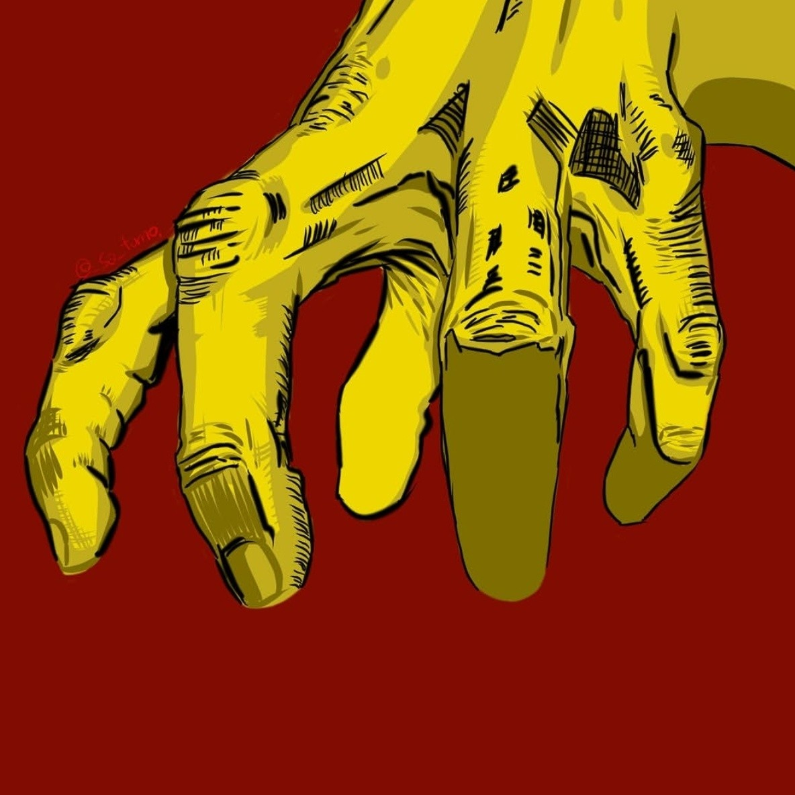
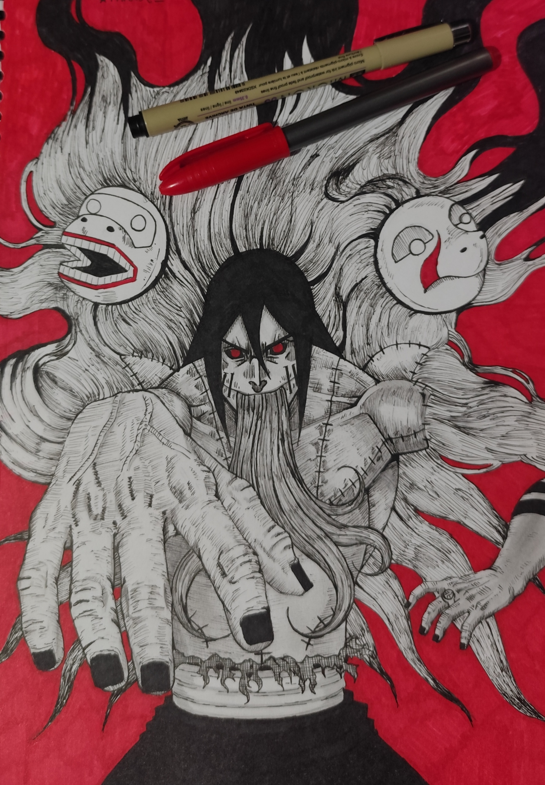

Origem
Arte digital focada no estudo de mãos, iluminação e perspectiva.
O foco principal foi explorar um traço mais carregado, utilizando hachuras para reforçar contraste e textura. A execução levou cerca de 3 horas.
2022 • Digital • Estudo técnico

Kakuzu — Reinterpretação
Retrato do personagem Kakuzu, da obra Naruto Shippuden, reinterpretado a partir do meu estilo.
O foco principal foi explorar um traço mais carregado, utilizando hachuras para reforçar contraste e textura. A execução levou cerca de 3 horas.
2026 • Papel • Reenterpretação de personagem